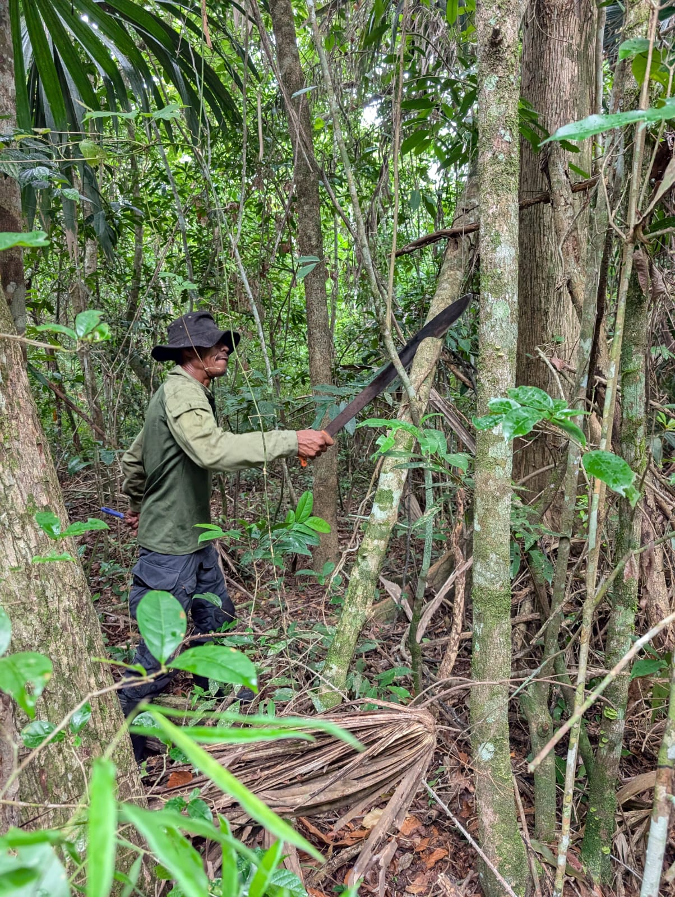
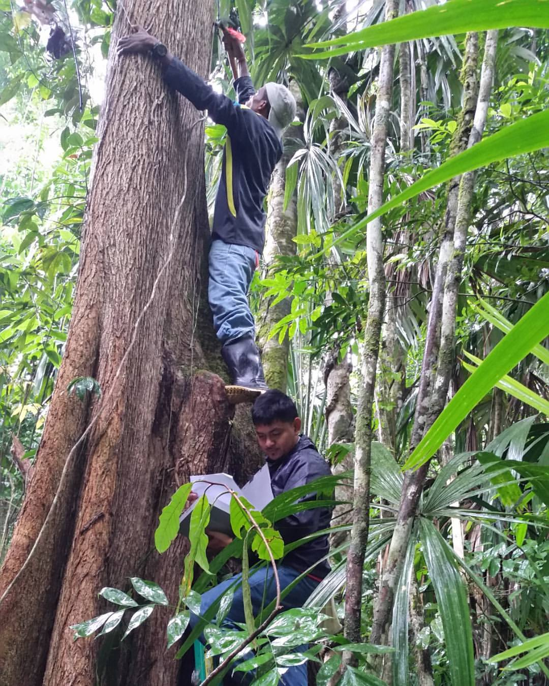
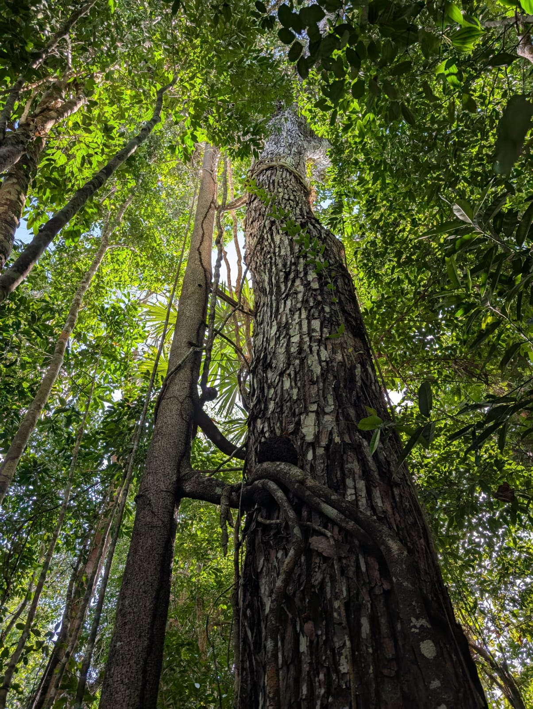

“The tropical forest ecologist, to some extent is still in limbo or rather in a green hell. According to some fantastic tales, hell would be a place where normal dimensions lack their normal constancy, leaving one in a permanent state of confusion.”
— R. A. A. Oldeman (1988)
I am a Belizean forest ecologist and conservation scientist working at the intersection of tropical forest ecology, disturbance ecology, and sustainable forestry. My research investigates how lianas, hurricanes, and logging shape the structure, carbon dynamics, and biodiversity of Belize's forests. My most recent work looks at how targeted silvicultural interventions like selective liana cutting can benefit timber yields, carbon sequestration, and forest recovery.
I recently completed my Ph.D. at the University of Florida (2022–2025), for which I established a large-scale liana-cutting experiment in the Belize Maya Forest in collaboration with The Nature Conservancy's Natural Climate Solutions Science Team. I hold an MSc from Georg-August-Universität Göttingen, where I was awarded the Göttingen Prize for Forest Ecosystem Research.
I am currently a Post-Doctoral Fellow at the National Herbarium of Belize / Caves Branch Botanical Garden, where I am leading digitization and curation efforts and building research programs centered on forest ecology and biodiversity.
I'm always happy to connect, whether it's about research collaboration, consultancy on forest ecology or conservation projects, field visits to Belize, or just talking trees.
Current and ongoing work in Belizean forests and beyond.

I established a large-scale liana-cutting experiment across ~700 trees of six timber species in the Belize Maya Forest to explore how liana liberation affects timber yields, carbon sequestration, and forest community dynamics. Includes 40 forest monitoring plots. In collaboration with The Nature Conservancy's Natural Climate Solutions Science Team.

Exploring the post-independence growth of peer-reviewed research in Belize and identifying major barriers faced by Belizean and foreign researchers when conducting work in the country.

Investigating the long-term impacts of low-intensity, reduced-impact logging on the natural regeneration of Big Leaf Mahogany — one of Belize's most economically and culturally significant tree species.
Peer-reviewed articles, with most recent work first.
Reflections on fieldwork, conservation, and forest science in Belize and beyond!